What's New in Ext JS 6.0
Many classes have shortcut names used when creating (instantiating) a class with a
configuration object. The shortcut name is referred to as an alias (or xtype if the
class extends Ext.Component). The alias/xtype is listed next to the class name of
applicable classes for quick reference.
Framework classes or their members may be specified as private or protected. Else,
the class / member is public. Public, protected, and private are access
descriptors used to convey how and when the class or class member should be used.
Public classes and class members are available for use by any other class or application code and may be relied upon as a stable and persistent within major product versions. Public classes and members may safely be extended via a subclass.
Protected class members are stable public members intended to be used by the
owning class or its subclasses. Protected members may safely be extended via a subclass.
Private classes and class members are used internally by the framework and are not intended to be used by application developers. Private classes and members may change or be omitted from the framework at any time without notice and should not be relied upon in application logic.
static label next to the
method name. *See Static below.Below is an example class member that we can disect to show the syntax of a class member (the lookupComponent method as viewed from the Ext.button.Button class in this case).
Let's look at each part of the member row:
lookupComponent in this example)( item ) in this example)Ext.Component in this case). This may be omitted for methods that do not
return anything other than undefined or may display as multiple possible values
separated by a forward slash / signifying that what is returned may depend on the
results of the method call (i.e. a method may return a Component if a get method calls is
successful or false if unsuccessful which would be displayed as
Ext.Component/Boolean).PROTECTED in
this example - see the Flags section below)Ext.container.Container in this example). The source
class will be displayed as a blue link if the member originates from the current class
and gray if it is inherited from an ancestor or mixed-in class.view source in the example)item : Object in the example).undefined a "Returns" section
will note the type of class or object returned and a description (Ext.Component in the
example)Available since 3.4.0 - not pictured in
the example) just after the member descriptionDefaults to: false)The API documentation uses a number of flags to further commnicate the class member's function and intent. The label may be represented by a text label, an abbreviation, or an icon.
classInstance.method1().method2().etc();false is returned from
an event handler- Indicates a framework class
- A singleton framework class. *See the singleton flag for more information
- A component-type framework class (any class within the Ext JS framework that extends Ext.Component)
- Indicates that the class, member, or guide is new in the currently viewed version
- Indicates a class member of type config
- Indicates a class member of type property
- Indicates a class member of type
method
- Indicates a class member of type event
- Indicates a class member of type
theme variable
- Indicates a class member of type
theme mixin
- Indicates that the class, member, or guide is new in the currently viewed version
Just below the class name on an API doc page is a row of buttons corresponding to the types of members owned by the current class. Each button shows a count of members by type (this count is updated as filters are applied). Clicking the button will navigate you to that member section. Hovering over the member-type button will reveal a popup menu of all members of that type for quick navigation.
Getting and setter methods that correlate to a class config option will show up in the methods section as well as in the configs section of both the API doc and the member-type menus just beneath the config they work with. The getter and setter method documentation will be found in the config row for easy reference.
Your page history is kept in localstorage and displayed (using the available real estate) just below the top title bar. By default, the only search results shown are the pages matching the product / version you're currently viewing. You can expand what is displayed by clicking on the button on the right-hand side of the history bar and choosing the "All" radio option. This will show all recent pages in the history bar for all products / versions.
Within the history config menu you will also see a listing of your recent page visits. The results are filtered by the "Current Product / Version" and "All" radio options. Clicking on the button will clear the history bar as well as the history kept in local storage.
If "All" is selected in the history config menu the checkbox option for "Show product details in the history bar" will be enabled. When checked, the product/version for each historic page will show alongside the page name in the history bar. Hovering the cursor over the page names in the history bar will also show the product/version as a tooltip.
Both API docs and guides can be searched for using the search field at the top of the page.
On API doc pages there is also a filter input field that filters the member rows using the filter string. In addition to filtering by string you can filter the class members by access level, inheritance, and read only. This is done using the checkboxes at the top of the page.
The checkbox at the bottom of the API class navigation tree filters the class list to include or exclude private classes.
Clicking on an empty search field will show your last 10 searches for quick navigation.
Each API doc page (with the exception of Javascript primitives pages) has a menu view of metadata relating to that class. This metadata view will have one or more of the following:
Ext.button.Button class has an alternate class name of Ext.Button). Alternate class
names are commonly maintained for backward compatibility.Runnable examples (Fiddles) are expanded on a page by default. You can collapse and expand example code blocks individually using the arrow on the top-left of the code block. You can also toggle the collapse state of all examples using the toggle button on the top-right of the page. The toggle-all state will be remembered between page loads.
Class members are collapsed on a page by default. You can expand and collapse members using the arrow icon on the left of the member row or globally using the expand / collapse all toggle button top-right.
Viewing the docs on narrower screens or browsers will result in a view optimized for a smaller form factor. The primary differences between the desktop and "mobile" view are:
The class source can be viewed by clicking on the class name at the top of an API doc page. The source for class members can be viewed by clicking on the "view source" link on the right-hand side of the member row.
With Ext JS 6, Sencha introduces a single framework for creating applications that run across all types of devices, from phones to tablets to desktops. You will be able to produce an optimal user experience while writing less code. Combined with a compelling new theme, Ext JS 6 has everything you need to create amazing experiences on any device.
The process of merging Ext JS and Sencha Touch has come a long way. In Ext JS 5, Sencha reconciled the core of its frameworks (Ext.data, Ext.app and much more) into the "core" package. The visual layer remained as part of Ext JS proper in the "ext" package. The final step of merging the Sencha Touch visual components required a home for these distinct aspects of the framework. To differentiate the component families from each other in Ext JS 6, we use the term "toolkit".
A "toolkit" is a package that contains only the visual elements of the framework. These include components like panels, buttons, grids and the rest. There are two toolkits in Ext JS 6: classic and modern.
The visual elements of Ext JS are now contained in the classic toolkit of Ext JS 6, while the visual elements of Sencha Touch are now contained in the modern toolkit.
Applications can simply choose their toolkit and add this to their "app.json":
"toolkit": "classic", // or "modern"
Below the toolkits is the common "core" package. The core package provides a common API
for things like data (Ext.data) and application architecture (Ext.app). Based on the
common core, applications can share code for managing data as well as ViewModels or control
logic for communicating with the back-end.
If you are upgrading from Sencha Touch, you'll immediately benefit from access to ViewModels
and ViewControllers when using the modern toolkit and the common core. You'll also be
using the multi-device event system introduced with Ext JS 5, so mouse events will seamlessly
translate to event listeners like touchstart without need to detect device capabilities.
With Ext JS 6 and Sencha Cmd 6, however, you can create Universal Applications that can use both toolkits. In this way you can create a single application that targets mobile devices like smart phones or corporate desktops running IE8 or any device or browser in between.
You can indicate which toolkits use which themes by omitting a toolkit key in your
Sencha Cmd generated "app.json" and, instead, include a modified builds block.
"builds": {
"classic": {
"toolkit": "classic",
"theme": "theme-triton"
},
"modern": {
"toolkit": "modern",
"theme": "theme-triton"
}
}
As you can see, we are designating "theme-triton" for both classic and modern toolkits, but you could adjust the themes in any way you see fit.
If you have the above builds block in your "app.json" a "sencha app build" would build
both designated builds into unique folders. You may also singularly build by targeting
the build key name. For instance:
sencha app build modern
Our Sencha Cmd generated starter app provides you with a working sandbox to use as a entry point for your application. Or even better, check out the new Admin Dashboard application template we've created (see below).
For more information about build profiles, please checkout the Developing for Multiple Screens and Environments guide
Central to this release is our latest theme named Triton. Triton is a flat, minimalistic theme that puts the focus on your content and not on decorations like rounded corners or gradients. The Triton theme is the first Ext JS theme to provide comprehensive support for "font icons". Many of the icons used in Triton are from Font Awesome with some useful additions to complete the ensemble. Using Triton, applications can easily control the size and color of these scalable, vector images.
Support for font icons includes such items as panel tools, tree icons, form field triggers, button arrows, checkboxes, radio buttons, grid action icons, grid column and filter menus, slider thumbs, box and border splitters, toolbar overflow indicators … and more. Pretty much all visual elements can use font icons.
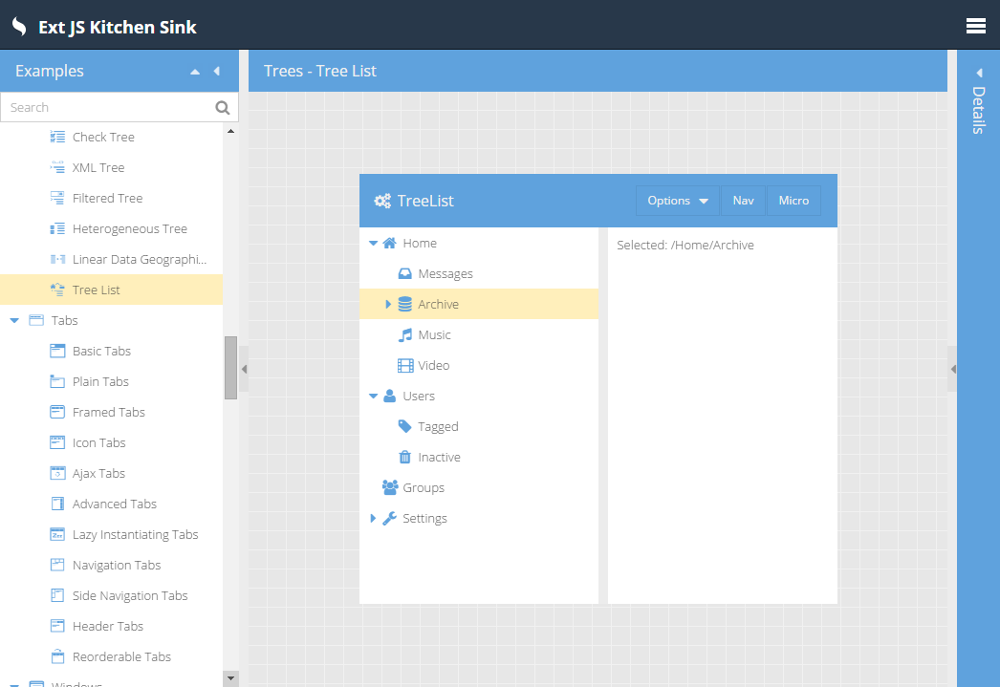
The Triton theme strikes a balance between desktop sizing and tablet sizing. For classic toolkit, this one size approach is simpler to manage compared to the approach taken by Neptune and Crisp which each provided a "touch-sized" derived theme.
For the modern toolkit, however, due to the use of CSS layouts, we are able to make size
more flexibly controlled. On smart phones, the html element automatically gains an x-big
class that will scale many items (such as buttons) to give them a larger target area.
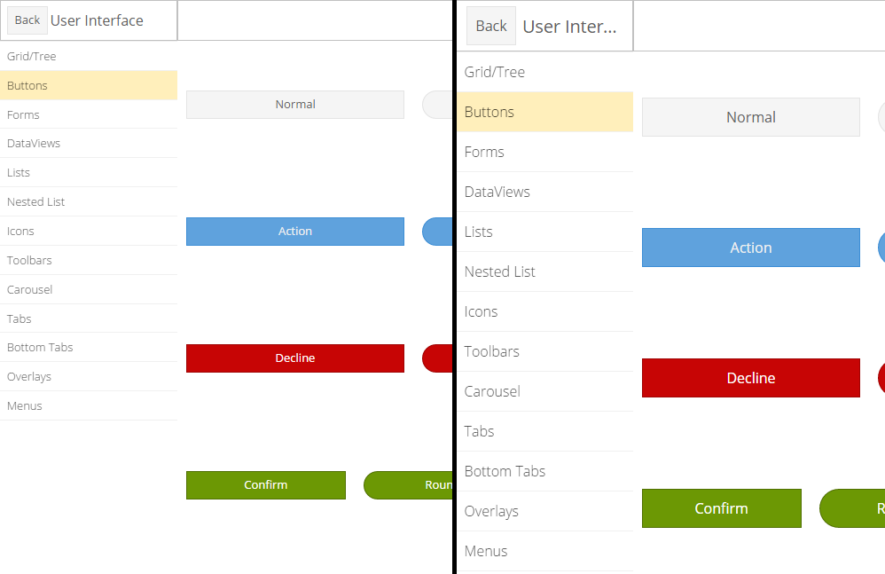
The KitchenSink buttons on the left are more suitable for desktop, while those on the right
would be more comfortable on a phone. You can change the default sizing by simply adding or
removing x-big from the html element when your application launches.
Fashion is Sencha's new compiler for building themes based
on "*.scss" files. Fashion is a Sass-like language with a few useful extensions to
support tooling. Fashion is implemented in JavaScript and runs within the browser and,
when combined with PhantomJS, Sencha Cmd can use Fashion for theme builds as well as for
app watch.
This means no more Ruby system requirement! Because Fashion runs in the browser, we will
not need to build the style rules twice (once for the slicer and again with the minimum
required content). More importantly, we can do incremental rebuilds of the theme during
app watch, which is a real benefit during development.
But there is an even more important benefit to app watch using Fashion - Live Updates! You
can open an application in a (modern) browser and the .scss files we be loaded instead
of the generated CSS. Fashion can then react to file changes and update the CSS without
reloading the page.
Ext JS 6 includes a standards-based implementation of promises that conforms to the Promises/A spec and tests suite. A big "thanks" goes to the DeftJS team for submitting their field tested implementation!
In future releases we will incorporate promises support in more areas of the framework,
but for Ext JS 6 we are starting with Ext.Ajax.request(). This method historically returned
an object to track the request in progress. That object is now an instance of a class
derived from Ext.data.request.Base which is then-able (in promises terminology). In
this way we preserve the current API of Ext.Ajax.request() as well as allow you to
write code like this:
Ext.Ajax.request({
url: 'some/url',
}).then(function (response) {
// use response
});
Promises can be created in one of two forms: new Ext.Promise(), following the ECMAScript 6
standard Promise class, and new Ext.Deferred() which has several useful enhancements.
Using Ext.Promise is the same as using the new Promise constructor:
function getAjax (url) {
// The function passed to Ext.Promise() is called immediately to start
// the asynchronous action.
//
return new Ext.Promise(function (resolve, reject) {
Ext.Ajax({
url: url,
success: function (response) {
// Use the provided "resolve" method to deliver the result.
//
resolve(response);
},
failure: function (response) {
// Use the provided "reject" method to deliver the error
//
reject(response);
}
});
});
}
Of course, now that Ext.Ajax.request() supports promises there is no need to do this,
but it illustrates how an asynchronous action can be converted to use Ext.Promise.
On browsers that natively support Promise, the Ext.Promise reference will be assigned
to Promise and will therefore only include the native features of a promise.
The equivalent using new Ext.Deferred() method looks like this:
function getAjax (url) {
var deferred = new Ext.Deferred();
Ext.Ajax({
url: url,
success: function (response) {
// Use the provided "resolve" method to deliver the result.
//
deferred.resolve(response);
},
failure: function (response) {
// Use the provided "reject" method to deliver the error
//
deferred.reject(response);
}
});
return deferred.promise;
}
The key difference between Ext.Promise and Ext.Deferred is that the creator has direct
access to the "behind-the-scenes" object managing the user's promise, that is the Ext.Deferred
instance. Using this object, the provider of the asynchronous operation can use additional
features (such as progress updates) that go beyond the current promises standard. In addition,
the promise instance returned by Ext.Deferred has additional methods that go along with
the extra features provided by Ext.Deferred.
The new spreadsheet model introduced in Ext JS 5.1 now has a couple of cool new features. The
selection can be made extensible (by setting extensible:true). This adds the
"drag-corner" or a small block on the bottom-right corner of the selection. This allows the
current selection to be extended either vertically or horizontally.
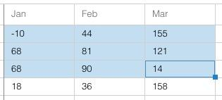
This will be often combined with a plugin that will use the current selection to replicate values into the expanded area (again like a spreadsheet).
Grids also support ARIA's "actionable mode" - an extension of our traditional cell edit mode. This allows all kinds of cell content to be focused and activated using only the keyboard. This is a huge step for accessibility but also makes for happy keyboard users since they can interact with anything in the grid without their hands leaving the keyboard.
Enter actionable mode using the F2 key. ENTER also starts cell editing which is now an example of actionable mode.
Navigation within a locking grid now navigates across the locking boundary. This is in both "navigable mode" (the default cell navigation mode) and "actionable mode" when cell contents are accessible and visited using the TAB key.
The grid component in the modern toolkit has many new exciting developments as well. In
the modern toolkit, much of the grid feature set is actually part of Ext.dataview.List
(its base class). The grid is a component list that uses a Ext.grid.Row for each item in
its store.
Unlike the Sencha Touch Grid, however, in Ext JS 6, the Row component is now a lightweight
container for cell widgets. In fact, cells are instances of classes in the Ext.grid.cell
namespace. These widgets come together with ViewModels making it easy to manage cells and
their configs using data binding, like so:
{
xtype: 'grid',
// Configure the Row (the List item):
//
itemConfig: {
// viewModel: true, // a default viewmodel
// or:
//
viewModel: {
type: 'mygrid-row' // enable formulas etc.
}
},
columns: [{
text: 'Age',
// ...
cell: {
bind: {
cls: '{record.cls}'
}
}
}]
}
The Row component ensures that the record property is published to its ViewModel (if it
is configured with one). All Cells in the row are implicitly connected to the Row's ViewModel
which of course inherits any higher-level ViewModels via the Grid.
The "infinite" list (buffered renderer) will only create a handful of Row components and
will recycle them by reconfiguring their record to that of the needed record. This will
naturally update the bound configs on child Cells.
Finally, using widgetcell (Ext.grid.cell.Widget) we can put components in a grid cell.
And, of course, they can leverage data binding as well.
{
xtype: 'grid',
//...
columns: [{
text: 'Verify',
// ...
cell: {
xtype: 'widgetcell',
widget: {
xtype: 'button',
ui: 'action',
bind: 'Verify {record.firstName}',
handler: 'onVerifyUser' // route to ViewController
}
}
}]
}
To see the modern grid in action, check out the KitchenSink.
The Admin Dashboard application template showcases not only our new Triton theme but also
the newest member of the growing Widget family: treelist. Being a Widget, treelist is
available in both the modern and the classic toolkits.
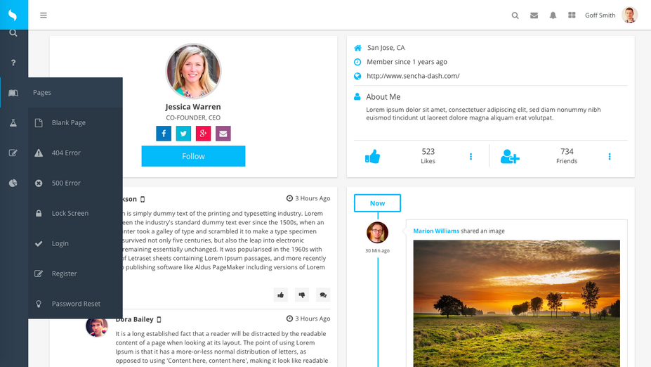
Beyond use in a navigation area, the treelist can be used similarly to a tree component. There
are a few key differences:
TreeStore (it does not support buffered rendering).
Nodes can, of course, be fetched asynchronously.This makes a treelist suitable for trees that don't contain too many nodes. For large datasets,
the standard tree component should still be preferred.
The KitchenSink example allows you to play with some of the configs on the treelist on-the-fly.
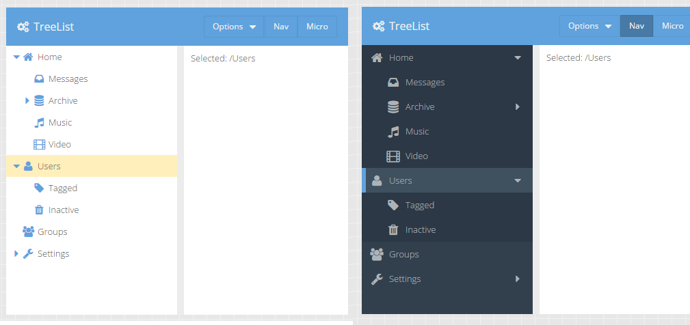
As you can see here, the ui config can be set dynamically and the tree will update
accordingly.
In the modern KitchenSink sink example, the treelist looks almost identical:
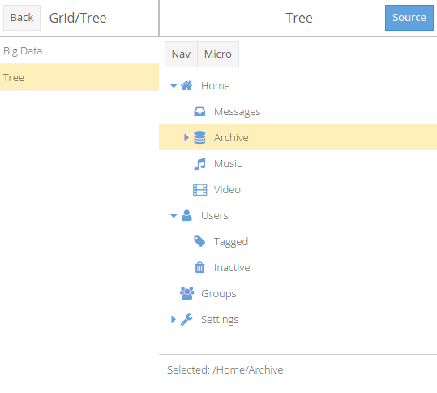
The Admin Dashboard also leverages our newest layout for the classic toolkit: responsivecolumn.
A common design goal for applications is to present content in a grid-like form with a
variable number of columns based on the available space. With IE8's lack of CSS @media
support, this goal can be a challenge to achieve. This is where responsivecolumn comes in.
You create a container using responsivecolumn and describe the layout states you want to
handle.
{
xtype: 'container',
layout: {
type: 'responsivecolumn',
states: {
small: 800,
large: 0
}
},
items: [{
xtype: 'panel',
responsiveCls: 'large-50 small-100'
},{
xtype: 'panel',
responsiveCls: 'large-50 small-100'
}]
}
We then add CSS rules to match these classes:
.large-100 {
@include responsivecolumn-item(100%);
}
.large-50 {
@include responsivecolumn-item(50%);
}
.x-responsivecolumn-small {
> .small-100 {
@include responsivecolumn-item(100%);
}
}
The result is that each panel takes up 50% of the width when the viewport is "large" (more than 800px) and 100% of the width when the viewport is "small" (less than 800px).
The responsivecolumn layout will add a CSS class to the container based on which state
matches the current viewport size. These dynamically maintained classes allow all browsers to
apply appropriate styling without requiring @media. The responsivecolumn layout is found
in the "ux" package.
With the introduction of Triton in the modern toolkit we have given a lot of attention to theme creation. We've organized themes into packages to enable theme derivation. In fact the Triton theme extends the Neptune theme which is also available now in the modern toolkit. We've also revisited the concept of the "ui" config and optimized how it is handled. Since modern browsers don't require complex solutions like framing, ui mixins can be made significantly simpler and therefore more flexible and efficient.
We started with buttons and created the new button-ui mixin. This mixin takes many optional
arguments (currently 45!) that you can use to tune almost every visual aspect of the Ext.Button
component. The key difference from the classic mixin is that this mixin will only
generate the few additional style rules needed to achieve the given adjustments.
To see how this works, consider this use of button-ui:
{
xtype: 'button',
ui: 'rounded'
}
//...
@include button-ui(
$ui: 'rounded',
$border-radius: 8px,
$border-radius-big: 12px // size when x-big is present
);
The entire generated CSS would look something like this:
.x-button-rounded {
border-radius: 8px;
}
.x-big .x-button-round {
border-radius: 12px;
}
This implies that the button element will get most of its styling from the x-button CSS
class and will gain the above styles as well. You can even use multiple names in the ui
config to compose multiple adjustments:
{
xtype: 'button',
ui: 'rounded red'
}
//...
@include button-ui(
$ui: 'red',
$background-color: red
);
The tiny additional CSS needed to make buttons red would then apply via x-button-red in
addition to the border radius from x-button-rounded.
We are delighted with what we've seen from this approach and are confident it will help applications achieve their aesthetic goals while at the same time future proof their code by keeping the details behind the mixin API. Look for more ui mixins for other components following this pattern in future releases.
The biggest new features in the charts package are the improvements to the 3D pie series ('pie3d'). It now supports labels, legend, highlighting, tooltips, bevels and has improved shading with configurable level of 3D effect.
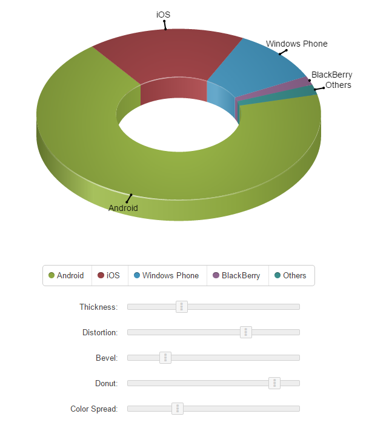
The various sliders in the new Charts KitchenSink example allow you play with each of those and see how they alter the appearance of the chart.
The new itemedit plugin allows users to drag 'bar' series items and markers of the 'scatter' series to edit the underlying data.
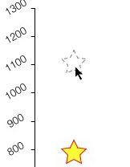
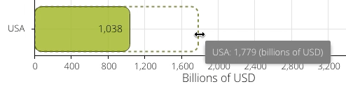
Declarative renderers (named methods implemented by a ViewController) are now supported for axis labels as well as series labels, items and tooltips.
With Ext JS Premium there are two additional code packages: exporter and pivot. These packages provide Excel data export and the Pivot Grid to help users display and analyze their data.
The pivot grid component is now provided in the pivot package and lives in the Ext.pivot
namespace. The main enhancements to the pivot grid are seen in the Configurator plugin.
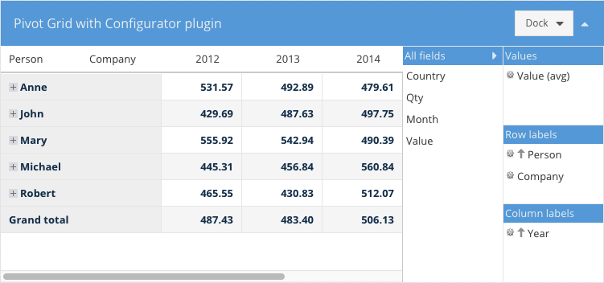
The interface to the configurator has been revamped and can now be docked on any side, including on the right (or left) as shown above. You can also configure whether or not the configurator panel is collapsible.
The pivotexporter plugin replaces the old Excel export plugin. This one uses a more generic
approach and allows you to export the pivot grid data to any Exporter available in the class system.
The pivot package requires the exporter package so you'll need both in your "packages"
folder.
Example:
{
xtype: 'pivotgrid',
plugins: [{
ptype: 'pivotexporter'
}]
}
// Somewhere on a button you may have something like this
//
grid.saveDocumentAs({
type: 'excel', // exporter alias
title: 'Excel export',
onlyExpandedNodes: false,
showSummary: true,
fileName: 'export.xml'
});
// saveDocumentAs will try to save the file in the browser. If your browser is not
// supported then do this
//
var xml = grid.getDocumentData({
type: 'excel', // exporter alias
title: 'Excel export',
onlyExpandedNodes: false,
showSummary: true
});
// and probably send the xml content to the server
There are two new Label filter operators available: in and not in.
leftAxis: [{
header: 'Country',
dataIndex: 'country',
filter: {
type: 'label',
operator: 'in',
value: [ 'USA', 'Canada', 'Australia' ]
}
}]
The exporter package contains classes you can use to create Excel documents as well as a grid plugin that you can add to your grid to add Excel export capability.
This plugin enables grid data to be exported to Excel. It can either save the file if the
browser supports it or generate the content for further processing. Grid columns that should
not be exported need to have their ignoreExport config set.
This plugin is part of the exporter package which means that it should be added to the app
packages folder and required in app.json.
Example:
{
xtype: 'grid',
plugins: [{
ptype: 'gridexporter'
}]
}
// Somewhere on a button you may have something like this
//
grid.saveDocumentAs({
type: 'excel', // exporter alias
title: 'Excel export',
fileName: 'export.xml'
});
// saveDocumentAs will try to save the file in the browser. If your browser
// is not supported then do this
//
var xml = grid.getDocumentData({
type: 'excel', // exporter alias
title: 'Excel export'
});
// and probably send the xml content to the server
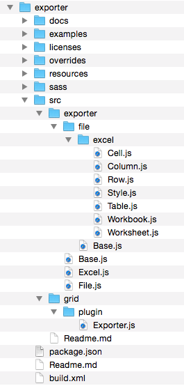
The exporter package contains classes that allows you to generate Excel XML documents with
any data that you need.
Here is a basic example of how to achieve this:
var workbook = Ext.create('Ext.exporter.file.excel.Workbook', {
title: 'My document',
author: 'John Doe'
});
var table = workbook.addWorksheet({
name: 'Sheet 1'
}).addTable();
// Add formatting to the first two columns of the spreadsheet
//
table.addColumn({
width: 120,
styleId: workbook.addStyle({
format: 'Long Time'
}).getId()
});
// ... etc ...
// Add a formula on the 4th row which sums up the previous 2 rows
table.addRow().addCell({
index: 2,
formula: '=SUM(R[-2]C:R[-1]C)'
});
// Save the document in the browser
//
Ext.exporter.File.saveAs(workbook.render(), 'document.xml', 'UTF-8');
The above document will look something like this:
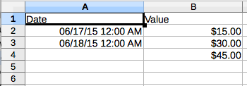
The Excel Exporter comes with the exporter package and it is used by both grid and pivot
grid plugins to generate Excel documents. You can write your own custom exporter classes by
extending from Ext.exporter.Base and direct the plugins to use your custom format.
Ext.define('My.custom.Exporter', {
extend: 'Ext.exporter.Base',
alias: 'exporter.custom',
...
});
grid.saveDocumentAs({
type: 'custom',
title: 'Custom export',
fileName: 'custom-format.xml'
});
In future releases we will add additional packages to Ext JS Premium as well as continue to enhance the Ext JS foundations.
We have integrated ARIA functionality directly into the component life-cycle. This means you won't need a special "aria" package to get correct ARIA behavior. Applications will now support screen readers (like JAWS) without additional effort.
Sencha Cmd 6 now includes localStorage caching of assets. This is similar to Sencha Touch's production microloader but with some important improvements.


 Ext JS | Terms of Use
Ext JS | Terms of Use